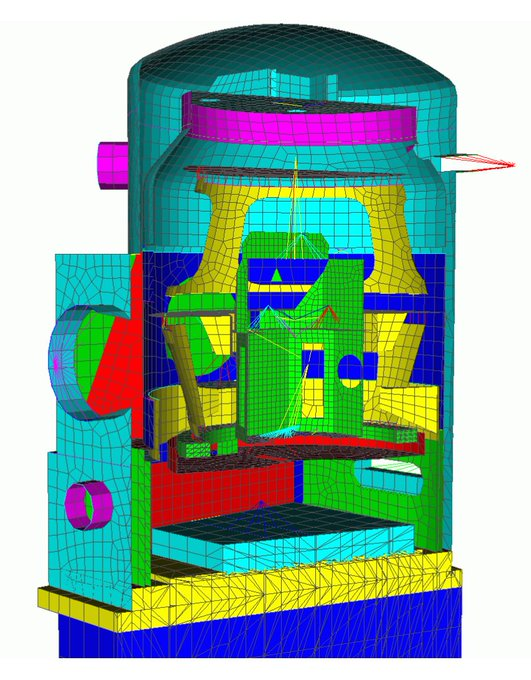

2022-11-11 Ratel for Solid Mechanics
Contents
2022-11-11 Ratel for Solid Mechanics#
Last time#
Stabilized methods
Dispersion diagrams
Mixed finite elements
Today#
Intro to solid mechanics, Ratel
Singularities and \(hp\) adaptivity
Cost of sparse matrices
GPU performance with Ratel and context
using Plots
default(linewidth=3)
using LinearAlgebra
using SparseArrays
Solid mechanics: Ratel Theory Guide#
Material coordinates#
The current configuration \(x\) is a function of the initial configuration \(X\). We typically solve for displacement \(u = x - X\), and define the deformation gradient
Conservation#
Mass by definition of density#
Momentum by equations we solve#
Angular momentum by symmetry of stress and strain tensors#
Momentum balance in initial configuration#
where \(\mathbf F = I + H\) and \(\mathbf S\) is the symmetric stress tensor (Second Piola-Kirchhoff tensor).
Strain measures#
Stress \(\mathbf S\) must be defined as a function of displacement. A common choice is to define the right Cauchy-Green tensor
This has value \(I\) for zero strain. A better formulation uses
Neo-Hookean model#
Strain energy density \begin{aligned} \psi \left(\mathbf{E} \right) &= \frac{\lambda}{2} \left( \log J \right)^2 - \mu \log J + \frac \mu 2 \left( \operatorname{trace} \mathbf{C} - 3 \right) \ &= \frac{\lambda}{2} \left( \log J \right)^2 - \mu \log J + \mu \operatorname{trace} \mathbf{E}, \end{aligned}
Nonlinear solid mechanics#
Industrial state of practice#
Low order finite elements: \(Q_1\) (trilinear) hexahedra, \(P_2\) (quadratic) tetrahedra.
Assembled matrices, sparse direct and algebraic multigrid solvers
Myths#
High order doesn’t help because real problems have singularities.
Matrix-free methods are just for high order problems
Industrial models are riddled with singularities#
Every reentrant corner
Every Dirichlet (fixed/clamped) to Neumann boundary transitien
(From Bhardwaj et al, 2002.)
The mathematician’s way: \(hp\) adaptive finite elements#
Elliptic PDE always have singularities at reentrant corners (and Dirichlet to Neumann boundary transitions).


How does it work?#
High order to resolve when solution is smooth, tiny low-order elements near singularities.
What meshes do engineers use?#

Approximation constants are good for high order#

Spurious stress singularities#

Geometric model has a round cylinder, no singularity
Linear meshes have weak reentrant corners
Moving to quadratic geometry elements is generally good enough
Gmsh supports arbitrary order
Why matrix-free?#
Assembled matrices need at least 4 bytes transferred per flop. Hardware does 10 flops per byte.
Matrix-free methods store and move less data, compute faster.


Matrix-free is faster for \(Q_1\) elements#

\(p\)-multigrid algorithm and cost breakdown#


Nonlinear solve efficiency#
\(Q_2\) elements#

\(Q_3\) elements#

Linear solve efficiency#
\(Q_2\) elements#

\(Q_3\) elements#

Coarse solver is hypre BoomerAMG tuned configured for elasticity; thanks Victor Paludetto Magri.
Preconditioner setup efficiency#
\(Q_2\) elements#

\(Q_3\) elements#

One node of Crusher vs historical Gordon Bell#
184 MDoF \(Q_2\) elements nonlinear analysis in seconds#
2002 Gordon Bell (Bhardwaj et al)#


2004 Gordon Bell (Adams et al)#


Old performance model#
Iterative solvers: Bandwidth#
SpMV arithmetic intensity of 1/6 flop/byte
Preconditioners also mostly bandwidth
Architectural latency a big problem on GPUs, especially for sparse triangular solves.
Sparse matrix-matrix products for AMG setup
Direct solvers: Bandwidth and Dense compute#
Leaf work in sparse direct solves
Dense factorization of supernodes
Fundamentally nonscalable, granularity on GPUs is already too big to apply on subdomains
Research on H-matrix approximations (e.g., in STRUMPACK)
New performance model#
Still mostly bandwidth#
Reduce storage needed at quadrature points
Half the cost of a sparse matrix already for linear elements
Big efficiency gains for high order
Assembled coarse levels are much smaller.
Compute#
Kernel fusion is necessary
Balance vectorization with cache/occupancy
\(O(n)\), but benefits from BLIS-like abstractions | BLIS | libCEED | |——|———| | packing | batched element restriction | | microkernel | basis action | | ? | user-provided qfunctions |
Solids: efficient matrix-free Jacobians#
cf. Davydov et al. (2020)#


Stable formulations for large-deformation solid mechanics#
Solving for \(\mathbf u(\mathbf X)\). Let \(H = \frac{\partial \mathbf u}{\partial \mathbf X}\) (displacement gradient) and \(F = I + H\) (deformation gradient).
Textbook approach#
Stress as a function of \(F\): \(J = \operatorname{det} F\), \(C = F^T F\)
\[S = \lambda \log J\, C^{-1} + \mu (I - C^{-1})\]
Unstable for small strain, \(F \approx I\) and \(J \approx 1\).
Stable approach#
Stable strain calculation
\[E = \underbrace{(C - I)/2}_{\text{unstable}} = (H + H^T + H^T H)/2\]Compute \(J_{-1} = J - 1\) in a stable way
Stress
\[S = \lambda \operatorname{\tt log1p}J_{-1}\, C^{-1} + 2 \mu C^{-1} E\]

This opens the door to dynamic mixed precision algorithms, with computationally intensive physics evaluated using single precision.
Outlook: https://ratel.micromorph.org#
You can move from \(Q_1\) to \(Q_2\) elements for about 2x cost (despite 8x more DoFs)
Mesh to resolve geometry, \(p\)-refine to pragmatic accuracy
libCEED isn’t just for high order; already 2x operator apply benefit for \(Q_1\)
Gordon Bell scale from 20 years ago \(\mapsto\) interactive on a workstation (if you can buy MI250X 😊)
\(p\)-multigrid, low-memory representation of matrix-free Jacobian
Multi-node GPU on CUDA and ROCm
Also good for implicit dynamics